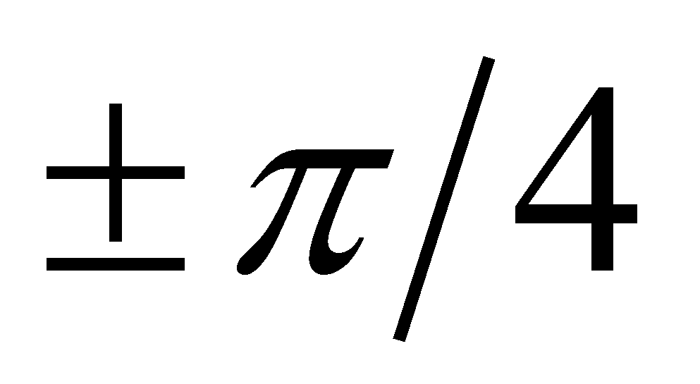

|
|
|
In the analytical geometry field, the “curves family” term is well-known, representing a set of continuous functions on a common interval, which are different one from another as a symbolic dependence relation only through the value of a parameter. For example, the family of the straight-lines which cross through the origin have a generic relation y = mx, where m (angular coefficient) is the parameter; in particular, in case of the straight-lines which have an angular direction ranging within the interval against the axis X, m may take any value between -1 and +1. In this case, the family of curves does not have asymptotes, the parameter m being also able to take the extreme value (the interval’s boundaries). The situation is different when there is a certain numerical value which allows the parameter to get close to it as much as possible, but if this value would be reached, it would qualitatively alter the object model (distribution type), this new object not being included into the family any longer. For making an illustration of this situation, we shall take into consideration the figure X.3.2.2.1 with the hyperbola family from the first quadrant xy=C, where C is a positive numerical constant (parameter), with a value specified for a certain hyperbola from the family (a certain member of the family).
Fig. X.3.2.2.1.1
It is obvious that the axes of reference are the asymptotes of the hyperbola family for the parameter C tending to zero, but if we would accept that the hyperbola and their asymptotes belong to the same family (therefore, they have the same model, the same symbolic distribution relation), we would reach to the absurd conclusion that even the axes of reference are a hyperbola (but a edited one, isn’t it? (#)). The same situation is in case of the relations X.3.2.2.3 and X.3.2.2.4, which define a group of ratios of some symmetrical finite differences (left/right) of a function against a reference value, a group whose parameter is x. The directional asymptote of this family is the direction of the tangent in the point P, object towards which the two variations tend to, but it cannot substitute them because they are qualitatively different objects.
Now, let us interpret the above-mentioned data by using the terminology specific to this paper, which is introduced in chapters 2…9. Thus, in case of the “families”, it is clear that we are dealing with classes of abstract objects, a class being an abstract object which has the common component of the models from a set of objects (members, class instances). In case of the straight-lines which cross through the origin or as regards the aforementioned hyperbolas, the common component of all the class members is the general symbolic relation (y=mx for the straight-lines and xy=C for the hyperbolas), each instance of those particular classes being differentiated only by means of the parameter’s numerical value, that is a value which represents, in terms of the objectual philosophy, the differential (specific) component of a member belonging to the class of curves (against the other members). While in case of the straight-line classes which cross through the origin, the definition relation of the class do not change regardless of the parameter value, as for the hyperbolas, an interesting aspect occurs when the parameter tends to zero, namely, as long as this parameter (C) is different from zero, this means that the hyperbolic dependence relation between y and x still exists; when the parameter vanishes, the dependence relation vanishes as well, and the two amounts become independent (axes of reference), as we have pointed out in chapter 2 about the independence concept regarding the variables. It is very clear that in this case, the limit objects of the class (asymptotes) and the normal objects within one class are qualitatively different as a class model, while the class members are different one from another only by means of the specific component values.
Copyright © 2006-2011 Aurel Rusu. All rights reserved.